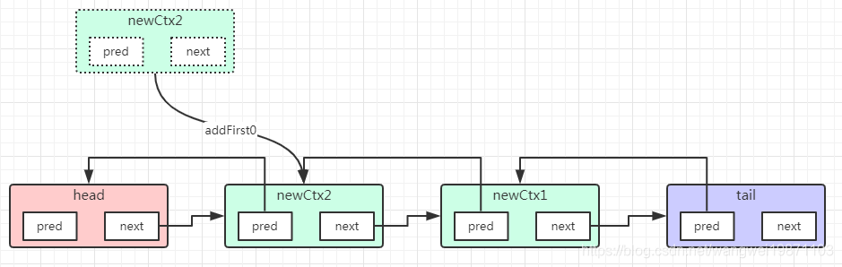

管道DefaultChannelPipeline 详细介绍
一、简单Demo
根据这个Demo来进行分析
x1public class MyNettyServer {2 public static void main(String[] args) throws Exception {3 // 在EventLoopGroup文中已介绍4 EventLoopGroup bossGroup = new NioEventLoopGroup(1);5 EventLoopGroup workerGroup = new NioEventLoopGroup();6
7 try {8 // 看下这个9 ServerBootstrap bootstrap = new ServerBootstrap();10 bootstrap.group(bossGroup, workerGroup)11 .channel(NioServerSocketChannel.class)12 .childHandler(new ChannelInitializer<SocketChannel>() {13 14 protected void initChannel(SocketChannel ch) throws Exception {15 ch.pipeline().addLast(new MyNettyServerHandler());16 }17 });18 19 ChannelFuture cf = bootstrap.bind(8888).sync();20 cf.addListener((ChannelFutureListener) future -> {21 if (cf.isSuccess()) {22 System.out.println("监听端口 8888 成功");23 } else {24 System.out.println("监听端口 8888 失败");25 }26 });27 cf.channel().closeFuture().sync();28 } finally {29 bossGroup.shutdownGracefully();30 workerGroup.shutdownGracefully();31 }32 }33
34}二、DefaultChannelPipeline源码介绍
重要属性
可以看到这些属性有上一篇所说的头尾处理器上下文，通道等，还有一些属性后面会用到，也注释了：
501// DefaultChannelPipeline.java2
3 // 头结点名字4 private static final String HEAD_NAME = generateName0(HeadContext.class);5 // 尾结点名字6 private static final String TAIL_NAME = generateName0(TailContext.class);7
8 // 为当前线程存放类型和名字的映射,避免重名9 private static final FastThreadLocal<Map<Class<?>, String>> nameCaches =10 new FastThreadLocal<Map<Class<?>, String>>() {11 12 protected Map<Class<?>, String> initialValue() {13 return new WeakHashMap<Class<?>, String>();14 }15 };16
17 // 消息大小估算器更新18 private static final AtomicReferenceFieldUpdater<DefaultChannelPipeline, MessageSizeEstimator.Handle> ESTIMATOR =19 AtomicReferenceFieldUpdater.newUpdater(20 DefaultChannelPipeline.class, MessageSizeEstimator.Handle.class, "estimatorHandle");21
22 // 头处理器上下文23 final AbstractChannelHandlerContext head;24 // 尾处理器上下文25 final AbstractChannelHandlerContext tail;26 27 // 通道28 private final Channel channel;29 // 通道异步结果30 private final ChannelFuture succeededFuture;31 // 任意类型的一步结果32 private final VoidChannelPromise voidPromise;33 // 是否要资源泄露检测34 private final boolean touch = ResourceLeakDetector.isEnabled();35
36 // 事件循环组合对应的执行器37 private Map<EventExecutorGroup, EventExecutor> childExecutors;38 // 消息大小评估处理器39 private volatile MessageSizeEstimator.Handle estimatorHandle;40 // 第一次注册41 private boolean firstRegistration = true;42
43 /** 44 * 如果在通道没注册到事件循环之前添加了处理器，则HandlerAdded暂时不触发，被添加到pendingHandlerCallbackHead链表中，到时候就会处理。45 * 只需要保存头结点就可以，是个链表结构，因为结点不会太多，所以用这个省内存，方便。46 */47 private PendingHandlerCallback pendingHandlerCallbackHead;48
49 // 通道只注册一次，不会变了50 private boolean registered;构造器
构造器就已经将通道保存起来了，然后创建了头尾两个节点，是一个双向链表，还有异步回调：
131protected DefaultChannelPipeline(Channel channel) {2 this.channel = ObjectUtil.checkNotNull(channel, "channel");3 succeededFuture = new SucceededChannelFuture(channel, null);4 voidPromise = new VoidChannelPromise(channel, true);5
6 // 创建尾结点7 tail = new TailContext(this);8 // 创建头结点9 head = new HeadContext(this);10 // 双向链表11 head.next = tail;12 tail.prev = head;13}常用的方法
创建上下文newContext
41//创建通道处理器上下文2private AbstractChannelHandlerContext newContext(EventExecutorGroup group, String name, ChannelHandler handler) {3 return new DefaultChannelHandlerContext(this, childExecutor(group), name, handler);4}头添加处理器addFirst
添加处理器能从头添加也能从尾添加，还能添加在某个结点前面，后面，或者干脆替换某个结点，原理都差不多，我们就那头添加来看看：
551// 最常用的添加处理器方法2public final ChannelPipeline addFirst(ChannelHandler handler) {3 return addFirst(null, handler);4}5
6public final ChannelPipeline addFirst(String name, ChannelHandler handler) {8 return addFirst(null, name, handler);9}10
11// 添加到head后 可以用EventExecutorGroup来执行耗时的任务，这个就是可以传入一个事件循环组来执行相应的操作12public final ChannelPipeline addFirst(EventExecutorGroup group, String name, ChannelHandler handler) {14 final AbstractChannelHandlerContext newCtx;15 // 添加结点的时候要同步，多线程安全16 synchronized (this) {17 checkMultiplicity(handler);18 name = filterName(name, handler);19
20 // 创建上下文21 newCtx = newContext(group, name, handler);22
23 // ---往下看---24 // 添加到双向链表中25 addFirst0(newCtx);26 // ---end---27
28 // If the registered is false it means that the channel was not registered on an eventLoop yet.29 // In this case we add the context to the pipeline and add a task that will call30 // ChannelHandler.handlerAdded(...) once the channel is registered.31 // 通道还没注册32 if (!registered) {33 // 设置为待添加34 newCtx.setAddPending();35 // ---往下看---36 // 设置后续的待添加的回调37 callHandlerCallbackLater(newCtx, true);38 // ---end---39 return this;40 }41 // 从通道获取获取执行器42 EventExecutor executor = newCtx.executor();43 // 执行器的线程不是当前线程44 if (!executor.inEventLoop()) {45 // ---往下看---46 // 添加任务到执行器47 callHandlerAddedInEventLoop(newCtx, executor);48 // ---end---49 return this;50 }51 }52 // 触发HandlerAdded回调53 callHandlerAdded0(newCtx);54 return this;55}上面的方法其实会先生成一个上下文
newCtx，DefaultChannelHandlerContext类型的，处理器是传进上下文中的，然后addFirst0将上下文newCtx添加到双向链表中，再判断通道是否有注册到事件循环上，如果没有，就将上下文设置为待添加状态，callHandlerCallbackLater设置后续来回调HandlerAdded方法，返回，如果上下文的执行器的线程不是当前线程，就添加任务到执行器里，返回，否则就触发HandlerAdded回调。
addFirst0：添加到双向链表中，这个就是双向链表的添加操作，可以看到实际添加的是处理器的上下文，而且 添加的位置并不是真正的头，而是头的后一个 ：
81// 双向链表添加到head后2private void addFirst0(AbstractChannelHandlerContext newCtx) {3AbstractChannelHandlerContext nextCtx = head.next;4newCtx.prev = head;5newCtx.next = nextCtx;6head.next = newCtx;7nextCtx.prev = newCtx;8}
callHandlerCallbackLater：延迟触发HandlerAdded，这个是因为通道注册到事件循环是异步的，需要事件循环线程启动执行任务，可能在此之前已经有添加了执行器，这个时候就不能触发
HandlerAdded，通道可能还没注册完，就说处理器添加好了呢。所以把这些都封装成后续要执行的任务，然后用单链表链起来，后面要一个个去回调，所以用单链表比较合适，当然这个也可以是删除任务：181//添加处理器待执行的任务2private void callHandlerCallbackLater(AbstractChannelHandlerContext ctx, boolean added) {3assert !registered;4// 添加一个处理器待执行的任务 添加或者删除5PendingHandlerCallback task = added ? new PendingHandlerAddedTask(ctx) : new PendingHandlerRemovedTask(ctx);6PendingHandlerCallback pending = pendingHandlerCallbackHead;7if (pending == null) {8// 如果没有设置过就设置为第一个9pendingHandlerCallbackHead = task;10} else {11// 否则就添加到最后，其实就是个单链表12// Find the tail of the linked-list.13while (pending.next != null) {14pending = pending.next;15}16pending.next = task;17}18}其实这个主要是针对注册前的初始化通道的时候，会添加接收器，这个时候还没注册，所以是会添加待处理任务，当然这里添加到尾部，原理类似的：
callHandlerAddedInEventLoop：添加触发HandlerAdded任务，如果不当前线程不是事件循环的线程，就添加一个任务，执行的时候也就是调用了
callHandlerAdded0。101// 添加任务到执行器2private void callHandlerAddedInEventLoop(final AbstractChannelHandlerContext newCtx, EventExecutor executor) {3newCtx.setAddPending();4executor.execute(new Runnable() {5public void run() {7callHandlerAdded0(newCtx);8}9});10}
callHandlerAdded0：触发上下文处理器添加事件
callHandlerAdded方法，内部会去触发处理器的handlerAdded方法。291private void callHandlerAdded0(final AbstractChannelHandlerContext ctx) {2try {3ctx.callHandlerAdded();4} catch (Throwable t) {5boolean removed = false;6try {7// 原子的删除处理器8atomicRemoveFromHandlerList(ctx);9// 触发删除回调10ctx.callHandlerRemoved();11removed = true;12} catch (Throwable t2) {13if (logger.isWarnEnabled()) {14logger.warn("Failed to remove a handler: " + ctx.name(), t2);15}16}17// 异常处理19if (removed) {20fireExceptionCaught(new ChannelPipelineException(21ctx.handler().getClass().getName() +22".handlerAdded() has thrown an exception; removed.", t));23} else {24fireExceptionCaught(new ChannelPipelineException(25ctx.handler().getClass().getName() +26".handlerAdded() has thrown an exception; also failed to remove.", t));27}28}29}最后是
AbstractChannelHandlerContext的callHandlerAdded：
删除处理器remove
删除处理器有很多中参数，比如直接传处理器对象，也可以传处理器上下文名字等，其实原理都是删除处理器上下文，然后触发处理器的handlerRemoved方法，拿个简单的根据处理器删除分析下吧，其他的都差不多，比较好理解。
remove(ChannelHandler handler)
得先获取相应的处理器上下文，然后进行删除：
51public final ChannelPipeline remove(ChannelHandler handler) {3 remove(getContextOrDie(handler));4 return this;5}getContextOrDie(ChannelHandler handler)
根据处理器获取上下文：
91// 根据处理器获取相应的处理器上下文2private AbstractChannelHandlerContext getContextOrDie(ChannelHandler handler) {3 AbstractChannelHandlerContext ctx = (AbstractChannelHandlerContext) context(handler);4 if (ctx == null) {5 throw new NoSuchElementException(handler.getClass().getName());6 } else {7 return ctx;8 }9}context
从头遍历，获取处理器相同的上下文：
191//根据处理器获取上下文2public final ChannelHandlerContext context(ChannelHandler handler) {4 ObjectUtil.checkNotNull(handler, "handler");5
6 AbstractChannelHandlerContext ctx = head.next;7 for (;;) {8
9 if (ctx == null) {10 return null;11 }12
13 if (ctx.handler() == handler) {14 return ctx;15 }16
17 ctx = ctx.next;18 }19}remove(final AbstractChannelHandlerContext ctx)
删除也需要同步，而且断链的方法也是同步的，其他跟添加类似，如果没注册就会提交任务，否则最后就会直接触发处理器的handlerRemoved方法：
361private synchronized void atomicRemoveFromHandlerList(AbstractChannelHandlerContext ctx) {2 AbstractChannelHandlerContext prev = ctx.prev;3 AbstractChannelHandlerContext next = ctx.next;4 prev.next = next;5 next.prev = prev;6}7
8private AbstractChannelHandlerContext remove(final AbstractChannelHandlerContext ctx) {9 assert ctx != head && ctx != tail;10
11 synchronized (this) {12 atomicRemoveFromHandlerList(ctx);13
14 // If the registered is false it means that the channel was not registered on an eventloop yet.15 // In this case we remove the context from the pipeline and add a task that will call16 // ChannelHandler.handlerRemoved(...) once the channel is registered.17 if (!registered) {18 callHandlerCallbackLater(ctx, false);19 return ctx;20 }21
22 EventExecutor executor = ctx.executor();23 if (!executor.inEventLoop()) {24 executor.execute(new Runnable() {25 26 public void run() {27 // ---往下看---28 callHandlerRemoved0(ctx);29 }30 });31 return ctx;32 }33 }34 callHandlerRemoved0(ctx);35 return ctx;36}callHandlerRemoved0
触发上下文的删除事件：
101// 上下文删除回调2private void callHandlerRemoved0(final AbstractChannelHandlerContext ctx) {3 // Notify the complete removal.4 try {5 ctx.callHandlerRemoved();6 } catch (Throwable t) {7 fireExceptionCaught(new ChannelPipelineException(8 ctx.handler().getClass().getName() + ".handlerRemoved() has thrown an exception.", t));9 }10}销毁所有处理器destroy
如果触发管道卸载事件，并且通道关闭了，这个时候
31private synchronized void destroy() {2 destroyUp(head.next, false);3}destroyUp
其实他就是从head开始遍历到tail ，然后调用destroyDown开进行销毁，这里为什么不是直接destroyDown销毁呢，就是不想阻塞当前的IO线程，让上下文执行器的线程来做这个事，所以给上下文的执行器添加了任务去销毁，任务一旦遍历到tail，就开始调用destroyDown：
281private void destroyUp(AbstractChannelHandlerContext ctx, boolean inEventLoop) {2 final Thread currentThread = Thread.currentThread();3 final AbstractChannelHandlerContext tail = this.tail;4 for (;;) {5 if (ctx == tail) {6 destroyDown(currentThread, tail.prev, inEventLoop);7 break;8 }9
10 final EventExecutor executor = ctx.executor();11 // 不是在同一线程，就提交个任务给执行器12 if (!inEventLoop && !executor.inEventLoop(currentThread)) {13 final AbstractChannelHandlerContext finalCtx = ctx;14 executor.execute(new Runnable() {15 16 public void run() {17 destroyUp(finalCtx, true);18 }19 });20 break;21 }22
23 // 遍历到下一个24 ctx = ctx.next;25 // 不是同一个线程，要添加任务给执行器26 inEventLoop = false;27 }28}destroyDown
这个就是从尾到头遍历结点，然后从双向链表中删除，同样也是不希望阻塞IO线程，也会用上下文执行器添加任务来执行：
321private void destroyDown(Thread currentThread, AbstractChannelHandlerContext ctx, boolean inEventLoop) {2 // We have reached at tail; now traverse backwards.3 final AbstractChannelHandlerContext head = this.head;4 for (;;) {5 // 直到head，停止6 if (ctx == head) {7 break;8 }9
10 final EventExecutor executor = ctx.executor();11 if (inEventLoop || executor.inEventLoop(currentThread)) {12 // 从双向链表中删除13 atomicRemoveFromHandlerList(ctx);14 callHandlerRemoved0(ctx);//回调15 } else {16 // 当前线程不是执行器线程就提交任务17 final AbstractChannelHandlerContext finalCtx = ctx;18 executor.execute(new Runnable() {19 20 public void run() {21 destroyDown(Thread.currentThread(), finalCtx, true);22 }23 });24 break;25 }26
27 // 找到前驱28 ctx = ctx.prev;29 // 尽可能线程任务来执行30 inEventLoop = false;31 }32}处理器上下文命名generateName
如果我们不传名字的话，会进行自动命名，不同类型的第一次就是命名成xx#0，如果有同名的存在链表中的就再命名，就会后面的数字+1，就像xx#1,xx#2这种，这样就同类型也去重了，我们来看下主要的方法：
做的就是对比，以前有上下文#0,上下文#1,那现在新的就是上下文#2。
251private String generateName(ChannelHandler handler) {2 // 获得类型缓存名字3 Map<Class<?>, String> cache = nameCaches.get();4 Class<?> handlerType = handler.getClass();5 String name = cache.get(handlerType);6 if (name == null) {7 name = generateName0(handlerType);8 cache.put(handlerType, name);9 }10
11 // 避免冲突，重命名，最后的编号+112 if (context0(name) != null) {13 String baseName = name.substring(0, name.length() - 1); // Strip the trailing '0'.14 for (int i = 1;; i ++) {15 // 标号+1 baseName#i16 String newName = baseName + i;17 // 直到没有重复的为止18 if (context0(newName) == null) {19 name = newName;20 break;21 }22 }23 }24 return name;25}invokeHandlerAddedIfNeeded
有待处理的任务，触发通道未注册时候添加的处理器的handlerAdded事件：
111final void invokeHandlerAddedIfNeeded() {2 assert channel.eventLoop().inEventLoop();3 // 只处理一次4 if (firstRegistration) {5 firstRegistration = false;6 7 // ---往下看---8 callHandlerAddedForAllHandlers();9 // ---end---10 }11}
这个方法是在注册时候去调用的。
callHandlerAddedForAllHandlers：回调待添加的所有处理器HandlerAdded方法
261private void callHandlerAddedForAllHandlers() {2final PendingHandlerCallback pendingHandlerCallbackHead;3// 需要同步，只能执行一次4synchronized (this) {5assert !registered;6// This Channel itself was registered.8registered = true;9pendingHandlerCallbackHead = this.pendingHandlerCallbackHead;11// Null out so it can be GC'ed.便于回收12this.pendingHandlerCallbackHead = null;13}14// This must happen outside of the synchronized(...) block as otherwise handlerAdded(...) may be called while16// holding the lock and so produce a deadlock if handlerAdded(...) will try to add another handler from outside17// the EventLoop.18// 需要在synchronized (this)外，否则在其他线程中的处理器的handlerAdded方法又添加另外一个处理器，19// 会对管道对象进行synchronized加锁，于是就死锁了，卡在这里了20PendingHandlerCallback task = pendingHandlerCallbackHead;21// 遍历链表执行22while (task != null) {23task.execute();24task = task.next;25}26}
内部类
PendingHandlerCallback
待处理任务，其实就是一个链表的结点结构，但是有个抽象的执行方法需要子类实现，因为有添加和删除，执行实现是不一样的：
121// 待处理任务2private abstract static class PendingHandlerCallback implements Runnable {3 final AbstractChannelHandlerContext ctx;4 // 单链表下一个5 PendingHandlerCallback next;6
7 PendingHandlerCallback(AbstractChannelHandlerContext ctx) {8 this.ctx = ctx;9 }10
11 abstract void execute();12}PendingHandlerAddedTask
待处理添加事件任务。可以看到最后处理还是调用callHandlerAdded0。
351//待添加的处理器任务2private final class PendingHandlerAddedTask extends PendingHandlerCallback {3
4 PendingHandlerAddedTask(AbstractChannelHandlerContext ctx) {5 super(ctx);6 }7 // 给执行器执行的8 9 public void run() {10 callHandlerAdded0(ctx);11 }12
13 14 void execute() {15 EventExecutor executor = ctx.executor();16 // 为了防止多线程问题，只用单线程17 if (executor.inEventLoop()) {18 // 直接触发19 callHandlerAdded0(ctx);20 } else {21 try {22 // 让执行器处理23 executor.execute(this);24 } catch (RejectedExecutionException e) {25 if (logger.isWarnEnabled()) {26 logger.warn(27 "Can't invoke handlerAdded() as the EventExecutor {} rejected it, removing handler {}.",28 executor, ctx.name(), e);29 }30 atomicRemoveFromHandlerList(ctx);31 ctx.setRemoved();32 }33 }34 }35}PendingHandlerRemovedTask
待处理删除事件任务，和添加类似。
331//待删除的任务2private final class PendingHandlerRemovedTask extends PendingHandlerCallback {3
4 PendingHandlerRemovedTask(AbstractChannelHandlerContext ctx) {5 super(ctx);6 }7
8 9 public void run() {10 callHandlerRemoved0(ctx);11 }12
13 14 void execute() {15 EventExecutor executor = ctx.executor();16 if (executor.inEventLoop()) {17 callHandlerRemoved0(ctx);18 } else {19 try {20 executor.execute(this);21 } catch (RejectedExecutionException e) {22 if (logger.isWarnEnabled()) {23 logger.warn(24 "Can't invoke handlerRemoved() as the EventExecutor {} rejected it," +25 " removing handler {}.", executor, ctx.name(), e);26 }27 // remove0(...) was call before so just call AbstractChannelHandlerContext.setRemoved().28 ctx.setRemoved();29 }30 }31 }32 }33}入站事件的一些方法
131// 触发并传递注册事件2public final ChannelPipeline fireChannelRegistered() {4 AbstractChannelHandlerContext.invokeChannelRegistered(head);5 return this;6}7
8// 触发并传递注销事件 9public final ChannelPipeline fireChannelUnregistered() {11 AbstractChannelHandlerContext.invokeChannelUnregistered(head);12 return this;13}231public final ChannelPipeline fireChannelActive() {3 AbstractChannelHandlerContext.invokeChannelActive(head);4 return this;5}6
7public final ChannelPipeline fireChannelInactive() {9 AbstractChannelHandlerContext.invokeChannelInactive(head);10 return this;11}12
13public final ChannelPipeline fireExceptionCaught(Throwable cause) {15 AbstractChannelHandlerContext.invokeExceptionCaught(head, cause);16 return this;17}18
19public final ChannelPipeline fireUserEventTriggered(Object event) {21 AbstractChannelHandlerContext.invokeUserEventTriggered(head, event);22 return this;23}61// 传递入站事件，都是从head开始传递事件2public final ChannelPipeline fireChannelRead(Object msg) {4 AbstractChannelHandlerContext.invokeChannelRead(head, msg);5 return this;6}
invokeChannelRead：
191static void invokeChannelRead(final AbstractChannelHandlerContext next, Object msg) {2// 看是不是引用计数接口类型，不是就直接返回，是就返回相应的接口类型3final Object m = next.pipeline.touch(ObjectUtil.checkNotNull(msg, "msg"), next);4// 获取next的执行器5EventExecutor executor = next.executor();6if (executor.inEventLoop()) {7// 如果执行器线程就是当前线程，就调用管道上下文的处理方法8next.invokeChannelRead(m);9} else {10// 否则给executor提交任务11executor.execute(new Runnable() {12public void run() {14//---往下看---15next.invokeChannelRead(m);16}17});18}19}
invokeChannelRead：获取处理器，触发相应事件。
111private void invokeChannelRead(Object msg) {2if (invokeHandler()) {3try {4((ChannelInboundHandler) handler()).channelRead(this, msg);//调用通道上下文的channelRead方法5} catch (Throwable t) {6notifyHandlerException(t);7}8} else {9fireChannelRead(msg);10}11}
head的channelRead：其实他什么都没做，就是向后传递：
412public void channelRead(ChannelHandlerContext ctx, Object msg) {3ctx.fireChannelRead(msg);//触发fireChannelRead4}
fireChannelRead：就是获取相应入站
MASK_CHANNEL_READ的处理器上下文，然后调用invokeChannelRead获取相应的处理器来处理读事件：1312public ChannelHandlerContext fireChannelRead(final Object msg) {3invokeChannelRead(findContextInbound(MASK_CHANNEL_READ), msg);4return this;5}6//获取处理相应事件的入站处理器上下文7private AbstractChannelHandlerContext findContextInbound(int mask) {8AbstractChannelHandlerContext ctx = this;9do {10ctx = ctx.next;//寻找下一个能处理相应事件的11} while ((ctx.executionMask & mask) == 0);//是否处理该mask12return ctx;13}
HeadContext
在管道的头尾是不一样的处理器上下文和处理器，他们都集中于一个类啦，我们先来看下头上下文：他自身既是上下文，也是出入站处理器。
构造器
先调用父类的上下文构造方法，然后获得通道的unsafe对象，后续的一些操作都是他做的，然后设置添加完成，因为他是在管道构造函数中创建的，所以创建了就是添加完成的：
71private final Unsafe unsafe;2
3HeadContext(DefaultChannelPipeline pipeline) {4 super(pipeline, null, HEAD_NAME, HeadContext.class);5 unsafe = pipeline.channel().unsafe();//通道的unsafe6 setAddComplete();7}其他方法
接下去是他的处理器就是自身，然后添加和删除事件都是空实现：
channelRegistered
通道注册事件里会调用一次invokeHandlerAddedIfNeeded，检查是否有处理器的待添加任务，然后就往后传递了，其实一般情况下，没做什么事，只是做了向后传递：
51public void channelRegistered(ChannelHandlerContext ctx) {3 invokeHandlerAddedIfNeeded();4 ctx.fireChannelRegistered();5}channelUnregistered
通道卸载事件先会进行传递，如果最后通道关闭了就销毁所有的处理器，其实也就是删除每一个处理器上下文，除了头和尾节点外：
91public void channelUnregistered(ChannelHandlerContext ctx) {3 ctx.fireChannelUnregistered();4
5 // Remove all handlers sequentially if channel is closed and unregistered.6 if (!channel.isOpen()) {7 destroy();8 }9}channelActive
先往后传递通道激活事件，最后判断是否可以自动读，因为通道注册完了之后就会触发激活，所以就可以开始读取数据了，读取到有连接也是读取事件：
61public void channelActive(ChannelHandlerContext ctx) {3 ctx.fireChannelActive();4
5 readIfIsAutoRead();6}readIfIsAutoRead
如果配置了自动读，就会开始去设置监听通道事件：
51private void readIfIsAutoRead() {2 if (channel.config().isAutoRead()) {3 channel.read();4 }5}
默认是自动读的：
调用通道的
read，还是会调用管道的read:
最终调用了尾结点
tail的read：其实也就是
AbstractChannelHandlerContext的read：1912public ChannelHandlerContext read() {3// 从尾到头找到一个出站的读，开始初始化的时候next就是head，如果你自定了，没处理好的话，可能后面就读不到数据了4final AbstractChannelHandlerContext next = findContextOutbound(MASK_READ);5EventExecutor executor = next.executor();6// 如果是同一个线程，就开始读7if (executor.inEventLoop()) {8next.invokeRead();9} else {10// 否则就添加一个任务11Tasks tasks = next.invokeTasks;12if (tasks == null) {13next.invokeTasks = tasks = new Tasks(next);14}15executor.execute(tasks.invokeReadTask);16}17return this;19}最终还是回到
head的read，其实这个很重要，如果你自定义的出站处理器的read方法没有处理好，那后面可能就读不到数据了，所以一般还是交给unsafe去处理读：4212public void read(ChannelHandlerContext ctx) {3unsafe.beginRead();4}5public final void beginRead() {8assertEventLoop();9if (!isActive()) {11return;12}13try {15doBeginRead();16} catch (final Exception e) {17invokeLater(new Runnable() {18public void run() {20pipeline.fireExceptionCaught(e);21}22});23close(voidPromise());24}25}26//初始化的时候事件循环执行的最后一个任务，其实就是设置相应的监听事件，当然可以监听读写事件：2829protected void doBeginRead() throws Exception {30// Channel.read() or ChannelHandlerContext.read() was called31final SelectionKey selectionKey = this.selectionKey;32if (!selectionKey.isValid()) {33return;34}35readPending = true;37final int interestOps = selectionKey.interestOps();39if ((interestOps & readInterestOp) == 0) {40selectionKey.interestOps(interestOps | readInterestOp);41}42}

channelReadComplete
等读数据处理完了，会再次去监听：
61public void channelReadComplete(ChannelHandlerContext ctx) {3 ctx.fireChannelReadComplete();4 //传递读事件完成后自动读5 readIfIsAutoRead();6} 所以这里要注意就是自己自定义的处理器不要随意去覆盖read方法，因为处理器上下文的read方法会从尾部开始遍历，找到第一个可以处理read的处理器，如果是你自定义的，你又没处理好，那就可能再也收不到消息了。画了一个head的read设置监听的大致情况：
这里要注意，就是无论是接受连接还是读取数据，都是属于读的，只是设置的事件标记不一样。
三、TailContext的作用
和head类似，作为尾结点的特殊处理器和上下文，但是只是入站处理器，消息传到这里也不处理，如果有资源的话会去释放：
所有入站的消息都会在这里终结，主要用于资源的释放，比如缓冲区，你可以看到他的实现方法：
591final class TailContext extends AbstractChannelHandlerContext implements ChannelInboundHandler {2
3 TailContext(DefaultChannelPipeline pipeline) {4 super(pipeline, null, TAIL_NAME, TailContext.class);5 setAddComplete();6 }7
8 9 public ChannelHandler handler() {10 return this;11 }12
13 14 public void channelRegistered(ChannelHandlerContext ctx) { }15
16 17 public void channelUnregistered(ChannelHandlerContext ctx) { }18
19 20 public void channelActive(ChannelHandlerContext ctx) {21 onUnhandledInboundChannelActive();22 }23
24 25 public void channelInactive(ChannelHandlerContext ctx) {26 onUnhandledInboundChannelInactive();27 }28
29 30 public void channelWritabilityChanged(ChannelHandlerContext ctx) {31 onUnhandledChannelWritabilityChanged();32 }33
34 35 public void handlerAdded(ChannelHandlerContext ctx) { }36
37 38 public void handlerRemoved(ChannelHandlerContext ctx) { }39
40 41 public void userEventTriggered(ChannelHandlerContext ctx, Object evt) {42 onUnhandledInboundUserEventTriggered(evt);43 }44
45 46 public void exceptionCaught(ChannelHandlerContext ctx, Throwable cause) {47 onUnhandledInboundException(cause);48 }49
50 51 public void channelRead(ChannelHandlerContext ctx, Object msg) {52 onUnhandledInboundMessage(ctx, msg);53 }54
55 56 public void channelReadComplete(ChannelHandlerContext ctx) {57 onUnhandledInboundChannelReadComplete();58 }59} onUnhandledInboundChannelReadComplete只是释放资源。
91protected void onUnhandledInboundMessage(Object msg) {2 try {3 logger.debug(4 "Discarded inbound message {} that reached at the tail of the pipeline. " +5 "Please check your pipeline configuration.", msg);6 } finally {7 ReferenceCountUtil.release(msg);8 }9}四、出站操作
和入站操作相反，很多出站操作是从tail尾结点开始的，比如：
461public final ChannelFuture bind(SocketAddress localAddress) {3 return tail.bind(localAddress);4}5
6public final ChannelFuture connect(SocketAddress remoteAddress) {8 return tail.connect(remoteAddress);9}10
11public final ChannelFuture connect(SocketAddress remoteAddress, SocketAddress localAddress) {13 return tail.connect(remoteAddress, localAddress);14}15
16public final ChannelFuture disconnect() {18 return tail.disconnect();19}20
21
22public final ChannelPipeline read() {24 tail.read();25 return this;26}27
28public final ChannelFuture write(Object msg) {30 return tail.write(msg);31}32
33public final ChannelFuture write(Object msg, ChannelPromise promise) {35 return tail.write(msg, promise);36}37
38public final ChannelFuture writeAndFlush(Object msg, ChannelPromise promise) {40 return tail.writeAndFlush(msg, promise);41}42
43public final ChannelFuture writeAndFlush(Object msg) {45 return tail.writeAndFlush(msg);46} 为什么都是从尾结点开始，这个应该就是拦截器的思想，入站是从头开始，那出站就是相反的方向，这样的话所有处理器才有可能被全部执行到，虽然大部分情况下最后都是传递到head这边处理，因为head里面有通道的unsafe方法，真正的操作是他做的：
AbstractChannelHandlerContext的write
一般我们就是在处理器channelRead读数据之后要写操作，都是调用这个方法，当然还有其他的重载方法，我们拿这个简单的来分析，看看他到底做了什么：
541// AbstractChannelHandlerContext.java2
3public ChannelFuture write(Object msg) {5 return write(msg, newPromise());6}7
8public ChannelFuture write(final Object msg, final ChannelPromise promise) {10 write(msg, false, promise);11
12 return promise;13}14
15private void write(Object msg, boolean flush, ChannelPromise promise) {16 ObjectUtil.checkNotNull(msg, "msg");17 try {18 if (isNotValidPromise(promise, true)) {19 ReferenceCountUtil.release(msg);20 // cancelled21 return;22 }23 } catch (RuntimeException e) {24 ReferenceCountUtil.release(msg);25 throw e;26 }27 // 获取前一个符合的出站的上下文28 final AbstractChannelHandlerContext next = findContextOutbound(flush ?29 (MASK_WRITE | MASK_FLUSH) : MASK_WRITE);30 31 final Object m = pipeline.touch(msg, next);32 EventExecutor executor = next.executor();33 if (executor.inEventLoop()) {34 if (flush) {35 // 写并且冲刷36 next.invokeWriteAndFlush(m, promise);37 } else {38 // ---看4-1.1---39 // 写40 next.invokeWrite(m, promise);41 // ---end---42 }43 } else {44 // 提交任务45 final WriteTask task = WriteTask.newInstance(next, m, promise, flush);46 if (!safeExecute(executor, task, promise, m, !flush)) {47 // We failed to submit the WriteTask. We need to cancel it so we decrement the pending bytes48 // and put it back in the Recycler for re-use later.49 //50 // See https://github.com/netty/netty/issues/8343.51 task.cancel();52 }53 }54 }invokeWrite
可以看到最后是调用处理器的wirte方法：
151void invokeWrite(Object msg, ChannelPromise promise) {2 if (invokeHandler()) {3 invokeWrite0(msg, promise);4 } else {5 write(msg, promise);6 }7}8
9private void invokeWrite0(Object msg, ChannelPromise promise) {10 try {11 ((ChannelOutboundHandler) handler()).write(this, msg, promise);12 } catch (Throwable t) {13 notifyOutboundHandlerException(t, promise);14 }15} 如果你在自定义的出站处理器里没有继续向前传递的话，这个写其实就没啥作用了，因为他没有传递到head上，只有传递到head了，他才会真正的写入出站缓冲区，如果我只是这样，那传递到他这里就断了，这个消息就没了：
所以应该继续往前传，或者你不覆盖这个方法，不覆盖ChannelOutboundHandlerAdapter默认就跳过这个处理器，传到一下个去了：
ChannelOutboundHandlerAdapter的实现：
HeadContext的write
最后会传递到head的write，内部就是调用unsafe写入出站缓冲区：
61// DefaultChannelPipeline#HeadContext.java2public void write(ChannelHandlerContext ctx, Object msg, ChannelPromise promise) {4 // 后边讲解5 unsafe.write(msg, promise);6}AbstractChannelHandlerContext的flush
通常我们再write完后可能会调用flush刷出去，其实他也是寻找前一个出站处理器上下文，然后执行flush方法：
181public ChannelHandlerContext flush() {3 final AbstractChannelHandlerContext next = findContextOutbound(MASK_FLUSH);4 EventExecutor executor = next.executor();5 if (executor.inEventLoop()) {6 // ---往下看---7 next.invokeFlush();8 // ---end---9 } else {10 Tasks tasks = next.invokeTasks;11 if (tasks == null) {12 next.invokeTasks = tasks = new Tasks(next);13 }14 safeExecute(executor, tasks.invokeFlushTask, channel().voidPromise(), null, false);15 }16
17 return this;18}invokeFlush
跟write很类似，AbstractChannelHandlerContext的invokeFlush0
141private void invokeFlush() {2 if (invokeHandler()) {3 invokeFlush0();4 } else {5 flush();6 }7}8private void invokeFlush0() {9 try {10 ((ChannelOutboundHandler) handler()).flush(this);11 } catch (Throwable t) {12 notifyHandlerException(t);13 }14}HeadContext的flush
41public void flush(ChannelHandlerContext ctx) {3 unsafe.flush();4}五、总结
无论是写还是冲刷，都是从一个处理器传递到前一个出站处理器，如果不是head的话，一定要继续传递，否则这个消息就没了，不会写入缓冲区，也不会冲刷出去，除非你自定义的出站处理器做了这些事，比如你调用ctx.channel().unsafe().write(buf,ctx.newPromise())。另外，所有的这些操作最终都是通过通道的unsafe的对象操作的，内部最后还是NIO的通道去做的，具体细节后面一篇说。大致流程可以参考这个：